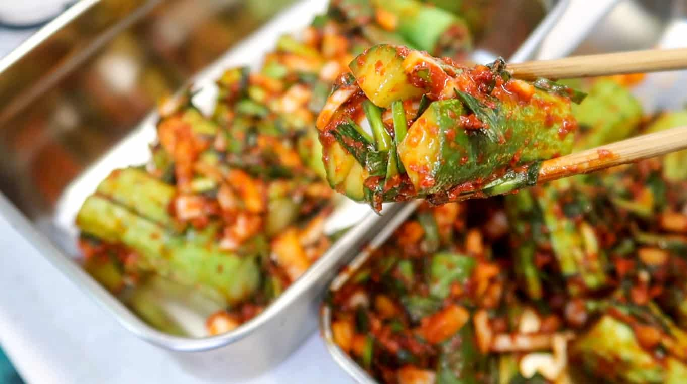

Oi sobagi
Este no es un plato principal, sino un banchan (acompañamiento) que se sirve con otros platos.
Ingredientes:
- Oi (pepino coreano): 5 unidades
- Buchu (cebollín coreano): 100 gr.
- Cebolla de verdeo: 2 unidades
- Ajo: 2 dientes
- Cebolla: 1/2 unidad
- Gochugaru molido grueso (ají molido picante): 3 cucharas de té
- Sal: una pizca
- Sal parrillera: 1/2 taza
- Azúcar: 1 cuchara de té
Pasos
- Cortar el oi en trozos de 5 cm. aproximadamente
- Cortar el trozo de oi longitudinalmente en forma de cruz sin llegar al fondo (el pepino queda como una flor abierta).
- Macerar el oi en sal parrillera (preferentemente) durante dos horas. Revolver regularmente el recipiente para que quede bien macerado.
- Lavar en agua, colar y reservar.
- Cortar la cebolla, el buchu y la cebolla de verdeo en cubos pequeños.
- Mezclar las verduras cortadas con el ajo picado, pizca de sal, azúcar y el gochugaru.
- Rellenar el oi con la mezcla de condimentos... y ¡listo para servir!